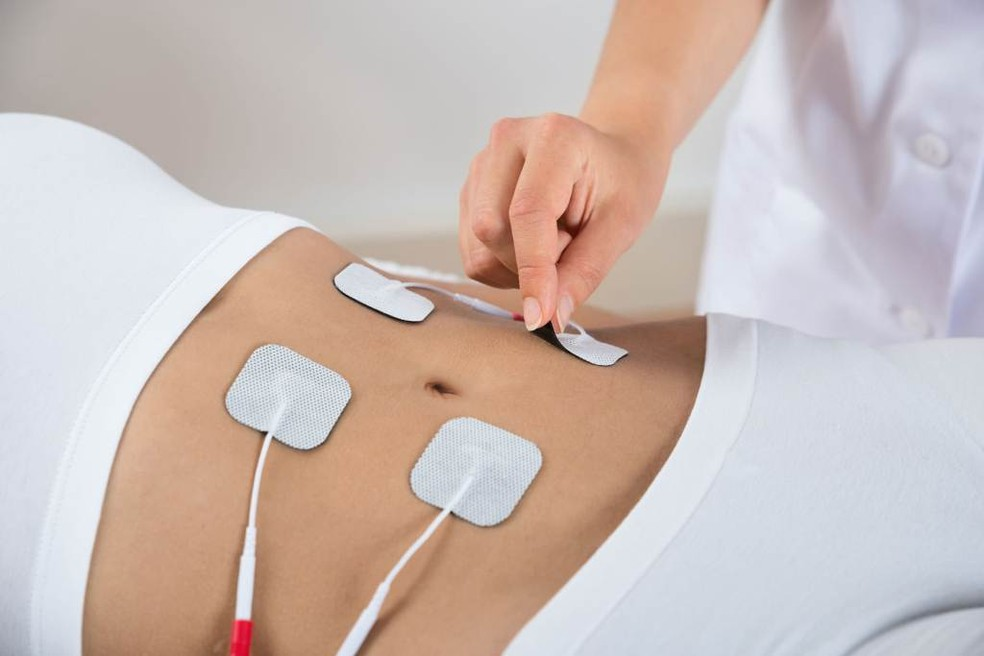

Corrente russa: o que é
A corrente russa é um aparelho que utiliza a corrente elétrica para estimular as contrações musculares, promovendo ganhos de força e volume muscular.
Esta técnica é amplamente utilizada na fisioterapia para pessoas que não conseguem contrair os músculos de forma eficaz, como aqueles que sofreram um acidente vascular cerebral ou são paraplégicos.
Como o aparelho promove ganhos de força muscular, os atletas também utilizam a corrente russa para fins estéticos e de performance, como o fortalecimento da musculatura abdominal. No entanto, esse uso ainda está em discussão, e os efeitos obtidos apenas com a Corrente Russa são considerados inferiores aos obtidos com a atividade física.

Para que serve a corrente russa
A corrente russa é usada principalmente em fisioterapia durante a reabilitação de pessoas que não conseguem contrair os músculos adequadamente, mas também pode ser usada para fins cosméticos.
Os principais sinais da Corrente Russa são:
- Prevenção da atrofia muscular;
- Tratamento da paraplegia;
- Fortalecimento do músculo abdominal, glúteos e pernas;
- Combate da flacidez abdominal;
- Melhora da performance, força e resistência muscular, em atletas.
O número de sessões de corrente russa depende da situação muscular de cada
pessoa, podendo ser realizadas sessões diárias com duração de 10 a 15 minutos.
Além disso, a força da corrente aplicada pode variar de acordo com a finalidade do tratamento. Para atletas e pessoas que fazem treinamento com corrente russa para fins estéticos, é recomendado que a pessoa continue fazendo atividade física regular e aplique a corrente nos músculos que exigem contrações musculares mais fortes.
Como funciona a corrente russa
O aparelho de corrente russa é composto de várias pequenas almofadinhas, que são os eletrodos, que devem ser posicionados no meio do músculo da região que está sendo tratada, mas sempre respeitando princípios, como não colocar ao mesmo tempo em músculos agonistas ou antagonistas, devendo por isso, ser posicionada por um fisioterapeuta ou preparador físico.
O aparelho irá promover um estímulo semelhante ao que o cérebro envia para os músculos, o que gera uma contração involuntária do músculo, mas para que possa tirar melhor proveito desse equipamento, sempre que este estímulo elétrico acontecer, o indivíduo deve contrair o músculo ao mesmo tempo.
Corrente russa emagrece?
A corrente russa vem sendo usado na estética para melhorar a aparência da barriga, pernas e glúteos, no entanto, ela não é tão eficaz quanto a prática do exercício físico, porque as contrações realizadas pelo equipamento não são exatamente iguais as que o corpo consegue fazer. Assim, esse equipamento nunca deverá substituir a prática do exercício físico.
A Acredita-se que 10 minutos de corrente russa a barriga correspondem a mais de 400 abdominais, mas para que a corrente russa seja realmente eficaz, é importante contrair o abdome ao mesmo tempo, pois assim todas as fibras do músculo reto do abdome podem ser trabalhadas.
O mesmo não acontece se a pessoa usar o equipamento num centro de estética, de forma totalmente passiva.